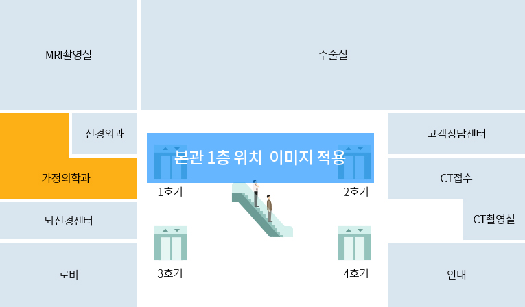

증명서 발급안내
가천대 길병원에서 발급하는 증명서입니다.
의무기록 및 영상이미지 사본발급 안내
의무기록 정의
- 환자의 질병에 관한 사항(현재병력, 과거병력, 수술력 등)과 진료, 치료 등을 위해 병원이 시행한 모든 사항을 기록한 문서로 의료진이 작성한 진료기록과 각종 검사 후 보고 된 검사결과를 함 한 환자의 개인정보가 담긴 기록을 총괄하여 지칭 함.
정보보호를 위한 주의 사항
- 의무기록은 환자의 민감한 정보로 보호되어야 하며, 의료법에서 명시한 경우를 제외하고는 타인의 열람 및 사본발급이 금지되고 있습니다.
이에, 의료법에 따라 적법한 절차를 거치지 않으면, 환자의 개인정보를 어떠한 방법(유선, 구두 등)으로도 알려드릴 수 없습니다.
관련법규 : 의료법 제21조, 시행규칙 제13조의 3
의무기록 /영상이미지 사본발급 절차
직접 방문 신청(재원환자 재원기록 제외)
| Step1 : 창구 방문 / 신청 | Step2 : 발급 / 수납 / 수령 |
|---|---|
|
|
재원환자 재원기록 신청
| Step1 : 창구 방문 / 신청 | Step2 : 발급 / 수납 / 수령 |
|---|---|
|
|
- 환자의 의무기록은 개인정보 중에서도 민감정보에 해당합니다. 환자의 의무기록 사본을 발급 받기 위해서는 환자 본인 또는 대리인이 신분증과 구비서류를 갖추어 직접 병원을 방문 하여 신청 후 발급 받으셔야 합니다.
- 방사선종양 의무기록 사본은 해당 진료과에서 담당하니 진료과로 문의 하세요.
의무기록/영상이미지 사본발급 비용 안내
의무기록
- 1장~5장 : 각 장당 1,000원(단면기준,page), - 6장부터 각 장당 100원씩 (단면기준)
* [예시] 총 2page(2,000원), 총 5page(5,000원), 총 7page(5,200원)
영상이미지
- CD(용량 700MB 이하, 개당) : 10,000원, - DVD(용량 700MB 이상, 개당) : 20,000원
* 꼭 필요한 기록을 필요한 부수만 신청해 주시기 바랍니다. (검사의 경우, 내원 기간에 따라 50~100장 이상 발행되는 경우에 유의하여 출력물 환불문제가 발생하지 않도록 협조를 부탁 드립니다.)
구비서류 주의사항 및 신청자별 분류
구비서류 주의사항
- 만17세 미만(주민등록증 미 발급) 환자 본인 신청 시 신분증 (여권, 학생증) 또는 가족 관계증명서 및 주민등록초본 등으로 반드시 본인 확인 후 발급.
- 신분증 또는 신분증 사본은 ➀공공기관이 발급 또는 ➁성명, 사진, 생년월일이 수록 된 것으로 주민등록증, 운전면허증, 여권, 청소년증, 공무원증, 국가유공자등록증 등을 예로 들 수 있음.
- 친족관계증명서는 환자-신청자간의 관계가 반드시 명시되어야 함 (건강보험증은 친족관계를 입증할 수 없는 서류이므로 인정되지 않음.)
- 환자와 신청자 간의 관계는 변동될 수 있으므로, 구비서류의 발행 기간이 사본 발급일 기준으로 3개월 이내에 발급 받은 것만 구비서류로 인정 함.
- 재위임(복대리) 가능. 반드시 환자가 재위임에 동의한 경우에만 가능함.
① 동의 방법 : 사본발급 환자 자필 동의서 또는 위임장에 복대리인 선임을 허용한다는 문구를 직접 기재하고 해당 문구 옆에 자필서명 한 경우에만 가능 함.
② 만14세미만 환아의 친족이 복대리인 선임시 그 동의는 환자의 법정 대리인이 하여야 함. - 교도소/구치소 입소자의 경우 입소증명서(발급당일만 유효사용), 군인의 경우는 병적증명서가 신분증을 대신할 수 있는 서류 임.
- 환자 자필동의서와 위임장은 원본으로 제출하여야 하고 작성 날짜가 1주일이내 이여야 함.
- 사본발급의 친족 범위는 배우자, 직계존속 및 비속, 배우자의 직계 존속 및 이들이 모두 없는 형제, 자매가 해당 되며, 이 경우 형제, 자매는 환자의 다른 친족이 모두 없음을 증명하는 서류 (예, 진료기록 열람 및 사본 발급을 위한 확인서)를 함께 제출하여야 함.
- 환자의 직계존속이 있는 형제, 자매는 친족 범위에 해당되지 않으므로, 대리인 기준에 의거하여 구비 서류를 제출하여야 함.
- 환자의 친족이 다른 대리인에게 위임할 수 있음. 이때 위임하는 친족이 환자와의 친족관계를 증명하는 서류와 신분증을 반드시 제출하여야 함.
- 동의서에는 사본발급을 받고자 하는 범위(진료일, 기록지 범위 등)를 구체적으로 기재하여야 함(신청인이 환자 본인이 발급을 원하지 않는 부분은 발급하지 못하게 하기 위함.)
- 환자가 미성년자(만19세 미만)인 경우의 사본발급은 ➀법정대리인, ➁환자본인, ➂친족, ➃지정대리인에 의하여 요청이 가능하며, 요청인에 따라 의료법에서 명시 된 구비서류를 갖추어 신청할 수 있음.
- 유전자검사 결과는 환자 본인이 타기관에 치료목적으로 사본 발급 요청할 경우에만 발급이 가능함. (미성년자는 법정대리인임을 증명하는 서류를 지참한 법정대리인에게만 발급 가능 함.)
* 위의 구비서류를 갖추었다 하더라도 환자 본인외의 친족을 포함한 대리인에게는 유전자검사 결과를 의무기록사본으로 발급되지 않음. (생명윤리 및 안전에 관한 법률에 근거함).
신청자별 구비서류
| 신청인 | 구비서류 |
|---|---|
| 환자 본인 | 본인 신분증 |
| 환자의 친족 | 신청자 신분증, 환자 신분증, 동의서, 가족관계증명서 또는 주민등록등본 등 친족관계를 확인할 수 있는 서류 |
| 환자가 지정한 대리인 | 신청자 신분증, 환자 신분증, 동의서, 위임장 |
세부 구비서류
환자의 동의를 받을 수 있는 경우
| 수령자 | 구비서류 | 비고 | |
|---|---|---|---|
| 환자 | 본인 | 본인신분증 |
* 환자나이에 따른 구분
|
| 친족 |
|
|
|
| 대리인 | 친족이외의 지정 대리인 (형제, 자매, 자부, 사위, 보험회사 등) |
|
|
환자의 동의를 받을 수 없는 경우
| 환자 | 수령자 | 제출서류 | 비고 |
|---|---|---|---|
|
환자의 친족이 신청 가능 (친족 위임 가능) |
|
제출서류는 발급일자 1주일 이내의 서류를 원칙으로 함. |
- 환자 사망 : 사망사실 확인 서류(가족관계증명서, 사망진단서, 제적등본 등)
- 환자 의식불명 또는 중증 질환, 부상 : 의식불명, 중증 질환, 부상 등으로 자필서명을 할 수 없음을 확인할 수 있는 진단서
- 환자 행방불명 : 행방불명 사실 확인할 수 있는 서류(주민등록표 등본, 법원의 실종선고 결정문 사본 등)
- 환자 의사무능력자 : 법원의 금치산 선고 결정문 사본 또는 의사무능력자임을 증명하는 정신과전문의 진단서
발급 장소 및 시간 안내
1. 발급시간
| 구분 | 본원창구 | 암센터창구 |
|---|---|---|
| 발급장소 | 정문 1층 출입구 좌측 | 정문 1층 출입구 중앙 |
| 의무기록사본 발급시간 |
* 월 ~ 금 : 08:00 ~17:30 * 토 : 08:00 ~12:30 (일요일, 공휴일은 휴무) |
* 월 ~ 금 : 08:00 ~17:30 * 토 : 08:00 ~12:30 (일요일, 공휴일은 휴무) |
| 영상이미지 사본 발급시간 |
* 월 ~ 금 : 08:00 ~17:30 * 토 : 08:00 ~12:30 (일요일, 공휴일, 야간 영상의학과 담당) |
* 월 ~ 금 : 08:00 ~17:30 * 토 : 08:00 ~12:30 (일요일, 공휴일, 야간 영상의학과 담당) |
2. 발급장소 (본관 1층)
